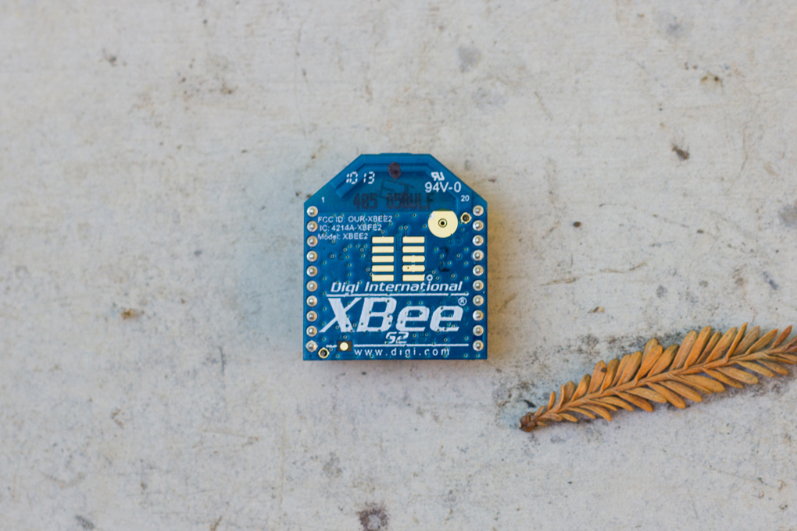
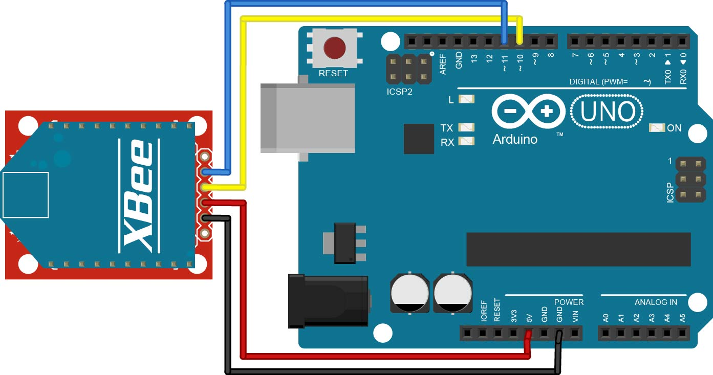

Getting Started with SimpleZigBee
for Arduino & XBee
SimpleZigBee is an easy-to-use Arduino library for communicating with XBee Series 2 and 2B ZigBee radios. The library implements the most popular XBee API frame types (TX, RX, AT Command, etc.) and makes it easy to add a wireless communication network to your Arduino project. This 3 part tutorial covers the basics of using the library to send and receive messages.

Getting Started: Part 3
This tutorial is a continuation of Getting Started with SimpleZigBee for Arduino & XBee: Part 2. You will need to complete Part 2 before starting Part 3. In this tutorial, you will again need 2 Arduinos, 2 XBee S2 radios, and 2 XBee Explorer boards. One XBee should have Coordinator API firmware and the other, Router API firmware. In this example, it does not matter if the XBees have the same PAN ID or if they are in API Mode 2 because we will change these settings by sending AT Commands from the Arduino to the XBee.
To setup the Coordinator, connect the XBee (with Coordinator API firmware) to your Arduino, as shown below. Upload the example sketch GettingStarted_Part3_Coordinator.ino to the Arduino and open the Arduino IDE’s Serial Monitor. Read through the code to understand what is being displayed in the serial monitor (though very little will occur until you complete the Router setup below).
To setup the Router, connect the XBee (with Router API firmware) to your second Arduino, as shown above. Upload the example sketch GettingStarted_Part3_Router.ino to the Arduino and open the Arduino IDE’s Serial Monitor. Read through the code to understand what is being displayed in the serial monitor.

Coordinator Code Walkthrough
In this section, we will walk through the GettingStarted_Part3_Coordinator.ino example code and explain the role of the SimpleZigBee library. Much of the code is identical to that from GettingStarted_Part2_Coordinator.ino and so we will focus on the new or modified lines of code. To begin, take a look at the following lines from the loop function.
if( xbee.isRX() ){
Serial.println( "RX Packet Received" );
Serial.print( "Sum: " );
int sum = 0;
for(int i=0;i<xbee.getRXPayloadLength();i++){
sum = sum + xbee.getRXPayload(i);
if(i!=0){
Serial.print( " + " );
}
Serial.print(xbee.getRXPayload(i));
}
Serial.print( " = " );
Serial.println( sum );
// The sum is an int and must therefore be broken
// into 2 bytes and set as the payload.
uint8_t payload[2]; // ints are 2 bytes
payload[0] = sum >> 8 & 0xff;
payload[1] = sum & 0xff;
// Prepare a TX Packet with the address of the sender.
xbee.prepareTXRequest(xbee.getRXAddress(),payload,2);
xbee.send();
Serial.print( "Send: " );
printPacket( xbee.getOutgoingPacketObject() );
}
In the code snippet, the Arduino checks if the incoming packet has the ZigBee RX frame type (0x90). If so, the Arduino sums the bytes in the payload. The contents of the payload are retrieved, one byte at a time, using the getRXPayload(i) method where i is the index within the payload. Next, the Arduino sends the sum back to the sender (in this case, the Router XBee). Because an Arduino int is 2 bytes, we need a payload byte array of length 2. We employ the prepareTXRequest method, which sets the TX frame type (0x10), frame id, and option (0x00). Additionally, the prepareTXRequest method accepts the 64-bit and 16-bit destination addresses (retrieved using getRXAddress), a payload (byte array), and payload length as input parameters.
Router Code Walkthrough
In this section, we will walk through the GettingStarted_Part3_Router.ino example code and explain the role of the SimpleZigBee library. Much of the code is identical to that from GettingStarted_Part2_Router.ino and so we will focus on the new or modified lines of code. To begin, take a look at the following lines from the loop function.
if( xbee.isRX() ){
Serial.println( "RX Packet Received" );
if( xbee.getRXPayloadLength() == 2 ){
int payloadVal = (xbee.getRXPayload(0) << 8) + xbee.getRXPayload(1);
Serial.print( "Received Sum: " );
Serial.println( payloadVal );
Serial.print( "Stored Sum: " );
Serial.println( sum );
}
}
In the code snippet, the Arduino checks if the incoming packet has the ZigBee RX frame type (0x90) and if the payload has a length of 2. If so, The Arduino combines the 2 bytes into an int, representing the sum of the numbers that were previously sent to the Coordinator. Finally, the Arduino prints both the stored and received sums to verify that the values match.
This concludes the 3 part Getting Started with SimpleZigBee for Arduino & XBee tutorial. I hope you found it helpful!